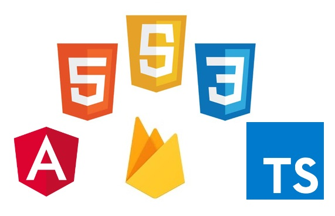
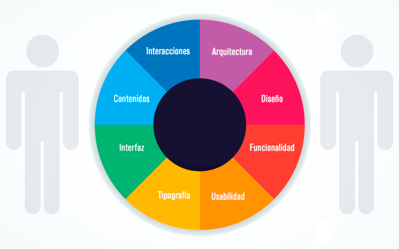
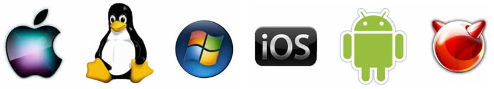

BUSTAMANTE MATHIAS

Mi GitHub!
Con las tecnologias WEB que permiten desarrollar aplicaciones multiplataforma
Principalmente orientada a la experiencia del usuario, garantizando que su funcionamieto sea fluido y pensado en el comportamiento del usuario y en la funcionalidad.
Para los sistemas operativos lideres en el mercado del consumo masivo
